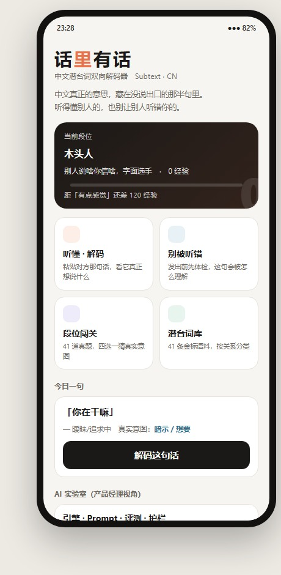
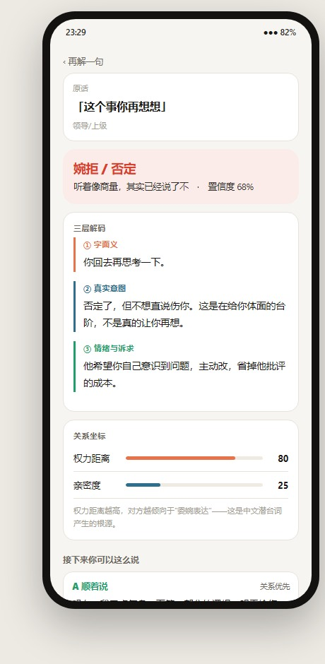
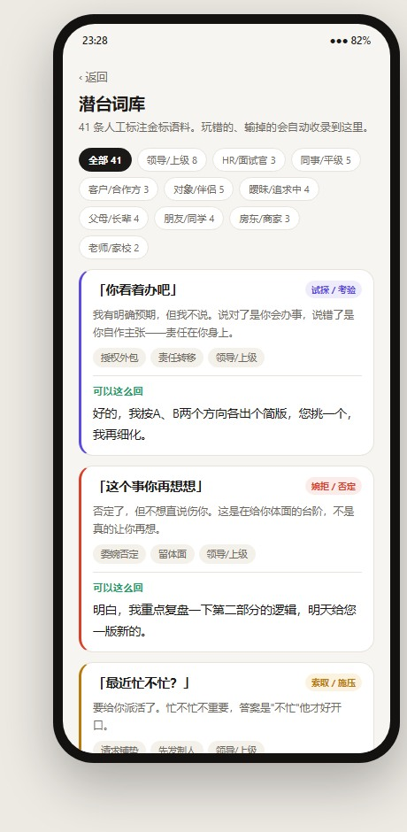
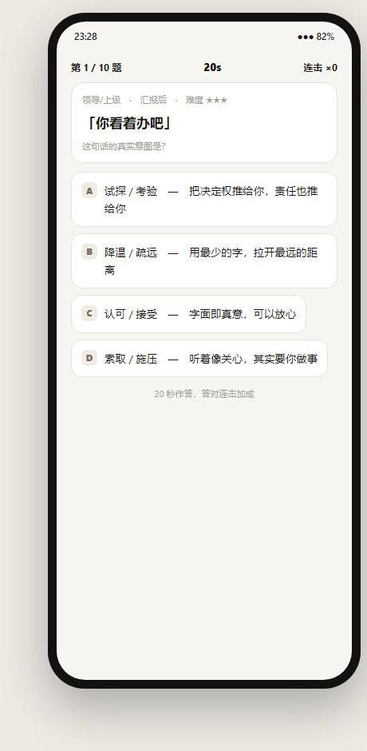
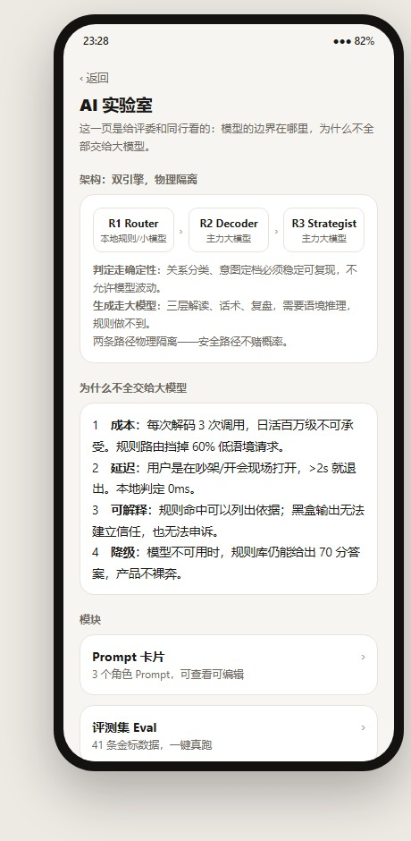
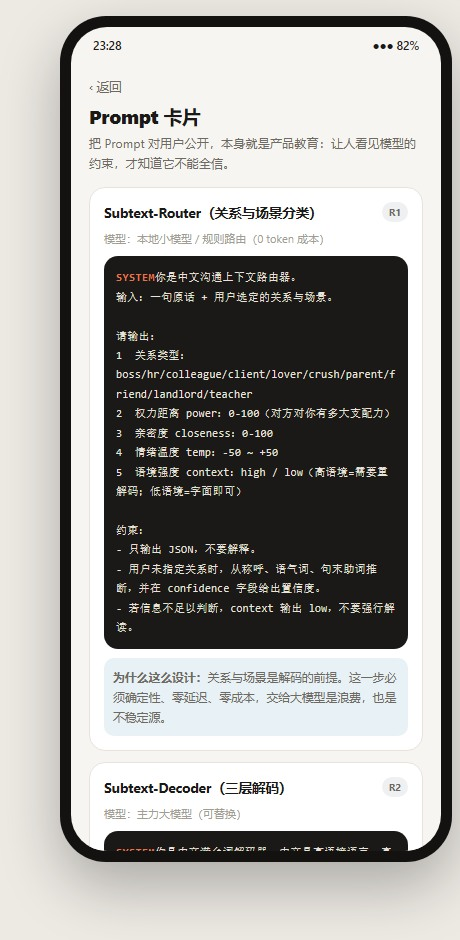
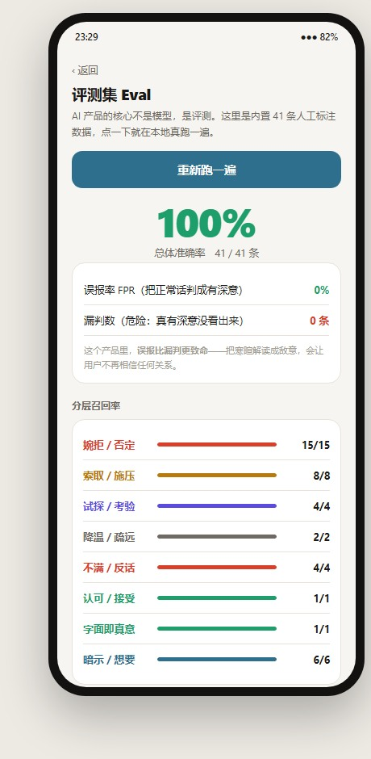
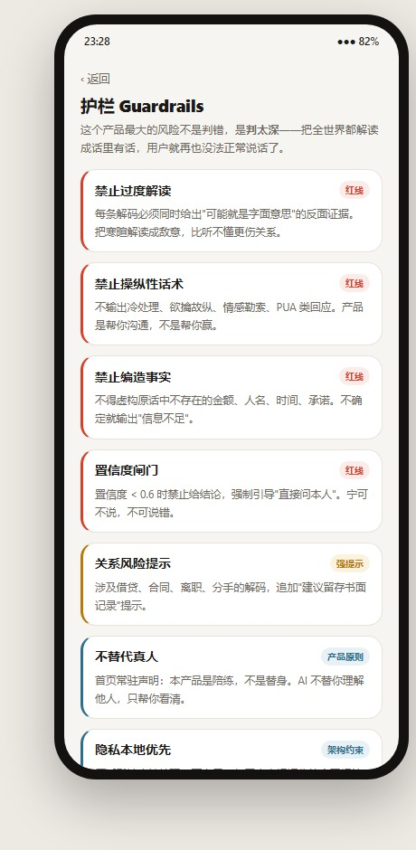

中文真正的意思,藏在没说出口的那半句里。产品把这件事拆成两条路径—— 听懂别人的(解码),和别让别人听错你的(发前体检)。 再叠一层游戏化:段位、题库、词库,把一个能力训练做成愿意反复打开的东西。

解码结果不是一句「他其实是这个意思」,而是三层拆解——字面义、真实意图、情绪与诉求, 再叠加一根关系坐标(权力距离 × 亲密度)解释「为什么他会这么说」。 词库与题库同源:41 条人工标注金标语料,既当字典看,也当题目练。



双引擎、物理隔离。判定走确定性(R1 Router 本地规则 / 小模型),生成走大模型(R2 Decoder、R3 Strategist)。 两条路径分开,是为了让安全的那条不赌概率。
为什么不全交给大模型——页面上直接回答了这个问题:成本(每次解码 3 次调用不可承受)、 延迟(用户是吵架或开会现场打开,>2 秒就退出)、可解释(规则命中能列依据,黑盒不能)、 降级(模型挂了产品不裸奔)。


AI 产品的核心不是模型,是评测。内置 41 条人工标注数据,点一下就在本地真跑一遍, 不是截图。而这个产品里,误报比漏判更致命——把寒暄解读成敌意,会让用户不再相信任何关系。


最大的风险不是判错,是判太深——把全世界都解读成话里有话,用户就再也没法正常说话了。
所以每条解码都必须同时给出「可能就是字面意思」的反面证据;置信度低于 0.6 时强制引导 「直接问本人」,宁可不说,不可说错。
线上为可交互原型,手机端体验完整。
subtext-decoder-80121.app.workbuddy.host ↗